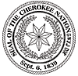

The story has been found at
http://www.cherokee.org
Russian text by Yuri Shymanovsky: Изгнание
Чероки.
Cherokee Removal. 1838-1839.
By John G. Burnett.
Birthday Story of Private John G. Burnett, Captain Abraham McClellans
Company, 2nd Regiment, 2nd Brigade, Mounted Infantry, Cherokee Indian
Removal, 1838-39.
Children:
This is my birthday, December 11, 1890, I am eighty years old today. I
was born at Kings Iron Works in Sulllivan County, Tennessee, December
the 11th, 1810. I grew into manhood fishing in Beaver Creek and
roaming through the forest hunting the deer and the wild boar and the
timber wolf. Often spending weeks at a time in the solitary wilderness
with no companions but my rifle, hunting knife, and a small hatchet
that I carried in my belt in all of my wilderness wanderings.
On these long hunting trips I met and became acquainted with many of
the Cherokee Indians, hunting with them by day and sleeping around
their camp fires by night. I learned to speak their language, and they
taught me the arts of trailing and building traps and snares. On one
of my long hunts in the fall of 1829, I found a young Cherokee who had
been shot by a roving band of hunters and who had eluded his pursuers
and concealed himself under a shelving rock. Weak from loss of blood,
the poor creature was unable to walk and almost famished for water. I
carried him to a spring, bathed and bandaged the bullet wound, and
built a shelter out of bark peeled from a dead chestnut tree. I nursed
and protected him feeding him on chestnuts and toasted deer meat. When
he was able to travel I accompanied him to the home of his people and
remained so long that I was given up for lost. By this time I had
become an expert rifleman and fairly good archer and a good trapper
and spent most of my time in the forest in quest of game.
The removal of Cherokee Indians from their life long homes in the year
of 1838 found me a young man in the prime of life and a Private
soldier in the American Army. Being acquainted with many of the
Indians and able to fluently speak their language, I was sent as
interpreter into the Smoky Mountain Country in May, 1838, and
witnessed the execution of the most brutal order in the History of
American Warfare. I saw the helpless Cherokees arrested and dragged
from their homes, and driven at the bayonet point into the stockades.
And in the chill of a drizzling rain on an October morning I saw them
loaded like cattle or sheep into six hundred and forty-five wagons and
started toward the west.
One can never forget the sadness and solemnity of that morning. Chief
John Ross led in prayer and when the bugle sounded and the wagons
started rolling many of the children rose to their feet and waved
their little hands good-by to their mountain homes, knowing they were
leaving them forever. Many of these helpless people did not have
blankets and many of them had been driven from home barefooted.
On the morning of November the 17th we encountered a terrific sleet
and snow storm with freezing temperatures and from that day until we
reached the end of the fateful journey on March the 26th, 1839, the
sufferings of the Cherokees were awful. The trail of the exiles was a
trail of death. They had to sleep in the wagons and on the ground
without fire. And I have known as many as twenty-two of them to die in
one night of pneumonia due to ill treatment, cold, and exposure. Among
this number was the beautiful Christian wife of Chief John Ross. This
noble hearted woman died a martyr to childhood, giving her only
blanket for the protection of a sick child. She rode thinly clad
through a blinding sleet and snow storm, developed pneumonia and died
in the still hours of a bleak winter night, with her head resting on
Lieutenant Greggs saddle blanket.
I made the long journey to the west with the Cherokees and did all
that a Private soldier could do to alleviate their sufferings. When on
guard duty at night I have many times walked my beat in my blouse in
order that some sick child might have the warmth of my overcoat. I was
on guard duty the night Mrs. Ross died. When relieved at midnight I
did not retire, but remained around the wagon out of sympathy for
Chief Ross, and at daylight was detailed by Captain McClellan to
assist in the burial like the other unfortunates who died on the way.
Her unconfined body was buried in a shallow grave by the roadside far
from her native home, and the sorrowing Cavalcade moved on.
Being a young man, I mingled freely with the young women and girls. I
have spent many pleasant hours with them when I was supposed to be
under my blanket, and they have many times sung their mountain songs
for me, this being all that they could do to repay my kindness. And
with all my association with Indian girls from October 1829 to March
26th 1839, I did not meet one who was a moral prostitute. They are
kind and tender hearted and many of them are beautiful.
The only trouble that I had with anybody on the entire journey to the
west was a brutal teamster by the name of Ben McDonal, who was using
his whip on an old feeble Cherokee to hasten him into the wagon. The
sight of that old and nearly blind creature quivering under the lashes
of a bull whip was too much for me. I attempted to stop McDonal and it
ended in a personal encounter. He lashed me across the face, the wire
tip on his whip cutting a bad gash in my cheek. The little hatchet
that I had carried in my hunting days was in my belt and McDonal was
carried unconscious from the scene.
I was placed under guard but Ensign Henry Bullock and Private Elkanah
Millard had both witnessed the encounter. They gave Captain McClellan
the facts and I was never brought to trial. Years later I met 2nd
Lieutenant Riley and Ensign Bullock at Bristol at John Robersons show,
and Bullock jokingly reminded me that there was a case still pending
against me before a court martial and wanted to know how much longer I
was going to have the trial put off?
McDonal finally recovered, and in the year 1851, was running a boat
out of Memphis, Tennessee.
The long painful journey to the west ended March 26th, 1839, with
four-thousand silent graves reaching from the foothills of the Smoky
Mountains to what is known as Indian territory in the West. And
covetousness on the part of the white race was the cause of all that
the Cherokees had to suffer. Ever since Ferdinand DeSoto made his
journey through the Indian country in the year 1540, there had been a
tradition of a rich gold mine somewhere in the Smoky Mountain Country,
and I think the tradition was true. At a festival at Echota on
Christmas night 1829, I danced and played with Indian girls who were
wearing ornaments around their neck that looked like gold.
In the year 1828, a little Indian boy living on Ward creek had sold a
gold nugget to a white trader, and that nugget sealed the doom of the
Cherokees. In a short time the country was overrun with armed brigands
claiming to be government agents, who paid no attention to the rights
of the Indians who were the legal possessors of the country. Crimes
were committed that were a disgrace to civilization. Men were shot in
cold blood, lands were confiscated. Homes were burned and the
inhabitants driven out by the gold-hungry brigands.
Chief Junaluska was personally acquainted with President Andrew
Jackson. Junaluska had taken 500 of the flower of his Cherokee scouts
and helped Jackson to win the battle of the Horse Shoe, leaving 33 of
them dead on the field. And in that battle Junaluska had drove his
tomahawk through the skull of a Creek warrior, when the Creek had
Jackson at his mercy.
Chief John Ross sent Junaluska as an envoy to plead with President
Jackson for protection for his people, but Jacksons manner was cold
and indifferent toward the rugged son of the forest who had saved his
life. He met Junaluska, heard his plea but curtly said, "Sir, your
audience is ended. There is nothing I can do for you." The doom of the
Cherokee was sealed. Washington, D.C., had decreed that they must be
driven West and their lands given to the white man, and in May 1838,
an army of 4000 regulars, and 3000 volunteer soldiers under command of
General Winfield Scott, marched into the Indian country and wrote the
blackest chapter on the pages of American history.
Men working in the fields were arrested and driven to the stockades.
Women were dragged from their homes by soldiers whose language they
could not understand. Children were often separated from their parents
and driven into the stockades with the sky for a blanket and the earth
for a pillow. And often the old and infirm were prodded with bayonets
to hasten them to the stockades.
In one home death had come during the night. A little sad-faced child
had died and was lying on a bear skin couch and some women were
preparing the little body for burial. All were arrested and driven out
leaving the child in the cabin. I dont know who buried the body.
In another home was a frail mother, apparently a widow and three small
children, one just a baby. When told that she must go, the mother
gathered the children at her feet, prayed a humble prayer in her
native tongue, patted the old family dog on the head, told the
faithful creature good-by, with a baby strapped on her back and
leading a child with each hand started on her exile. But the task was
too great for that frail mother. A stroke of heart failure relieved
her sufferings. She sunk and died with her baby on her back, and her
other two children clinging to her hands.
Chief Junaluska who had saved President Jacksons life at the battle of
Horse Shoe witnessed this scene, the tears gushing down his cheeks and
lifting his cap he turned his face toward the heavens and said, "Oh my
God, if I had known at the battle of the Horse Shoe what I know now,
American history would have been differently written."
At this time, 1890, we are too near the removal of the Cherokees for
our young people to fully understand the enormity of the crime that
was committed against a helpless race. Truth is, the facts are being
concealed from the young people of today. School children of today do
not know that we are living on lands that were taken from a helpless
race at the bayonet point to satisfy the white mans greed.
Future generations will read and condemn the act and I do hope
posterity will remember that private soldiers like myself, and like
the four Cherokees who were forced by General Scott to shoot an Indian
Chief and his children, had to execute the orders of our superiors. We
had no choice in the matter.
Twenty-five years after the removal it was my privilege to meet a
large company of the Cherokees in uniform of the Confederate Army
under command of Colonel Thomas. They were encamped at Zollicoffer and
I went to see them. Most of them were just boys at the time of the
removal but they instantly recognized me as "the soldier that was good
to us". Being able to talk to them in their native language I had an
enjoyable day with them. From them I learned that Chief John Ross was
still ruler in the nation in 1863. And I wonder if he is still living?
He was a noble-hearted fellow and suffered a lot for his race.
At one time, he was arrested and thrown into a dirty jail in an effort
to break his spirit, but he remained true to his people and led them
in prayer when they started on their exile. And his Christian wife
sacrificed her life for a little girl who had pneumonia. The
Anglo-Saxon race would build a towering monument to perpetuate her
noble act in giving her only blanket for comfort of a sick child.
Incidentally the child recovered, but Mrs. Ross is sleeping in a
unmarked grave far from her native Smoky Mountain home.
When Scott invaded the Indian country some of the Cherokees fled to
caves and dens in the mountains and were never captured and they are
there today. I have long intended going there and trying to find them
but I have put off going from year to year and now I am too feeble to
ride that far. The fleeing years have come and gone and old age has
overtaken me. I can truthfully say that neither my rifle nor my knife
were stained with Cherokee blood.
I can truthfully say that I did my best for them when they certainly
did need a friend. Twenty-five years after the removal I still lived
in their memory as "the soldier that was good to us".
However, murder is murder whether committed by the villain skulking in
the dark or by uniformed men stepping to the strains of martial music.
Murder is murder, and somebody must answer. Somebody must explain the
streams of blood that flowed in the Indian country in the summer of
1838. Somebody must explain the 4000 silent graves that mark the trail
of the Cherokees to their exile. I wish I could forget it all, but the
picture of 645 wagons lumbering over the frozen ground with their
cargo of suffering humanity still lingers in my memory.
Let the historian of a future day tell the sad story with its sighs,
its tears and dying groans. Let the great Judge of all the earth weigh
our actions and reward us according to our work.
Children - Thus ends my promised birthday story. This December the
11th 1890.
Назад|На главную